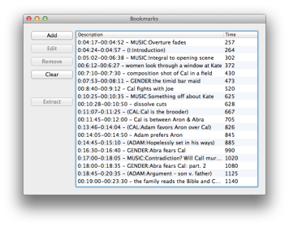

The above form can generate a .zip archive of movie clips, or a .m3u file that can be used to play film bookmarks in the full movie.
The .m3u playlist contains named bookmarks that can be clicked to go to a specific time in the film. If you open the .m3u file in VLC, then open the bookmarks window, you will see a clickable list like in the image below.

Clip times are read from a CSV file formatted like below: (Valid example file)
0:04:17,00:04:52,"MUSIC:Overture fades" 0:05:02,00:06:38,"MUSIC:Integral to opening scene" 0:07:53,00:08:11,"GENDER:the timid bar maid" 0:10:25,00:10:35,"MUSIC:Something off about Kate" 0:29:00,00:30:30,"MUSIC:Cal visits Kate"
The first column is the start time of the clip, the second column is the end time, and the third column is the desired title. Times are in "hours:minutes:seconds" format.
You can edit this file in plaintext, if you wish. You can also create a spreadsheet in Excel, and export it as CSV.
Excel will warn you about a few things that happen when converting to CSV. They're all fine, so skip through the warnings.
Windows or GNU/Linux: Playback -> Custom Bookmarks
Mac: Window-> Bookmarks, or ⌘ B
Windows: On a Windows 7 machine, you can copy the full path of any file by right clicking, and selecting 'Copy Address as Text.'
Mac: Right click your file, and select 'Get Info'. The full path to the file can be found under the "Where:" field.
Note that if you've been playing the movies directly in your web browser, this will not work for you. You need to download the film to your hard drive and give the path on your computer.
The m3u playlist points to a specific video file. If you try to open the playlist on a different computer, it will fail if there's no video at the path specified. To get an m3u that will not fail, you will need to provide the path of the video on that computer when generating the .m3u. For example, you can make a playlist that will run on the classroom's computer by specifying the movie file path as:
/Users/classroom/Desktop/East_of_Eden.m4v(Substitute "East_of_Eden" with your video.) Then, simply download the .m4v to the classroom's Desktop, and your playlist should work.